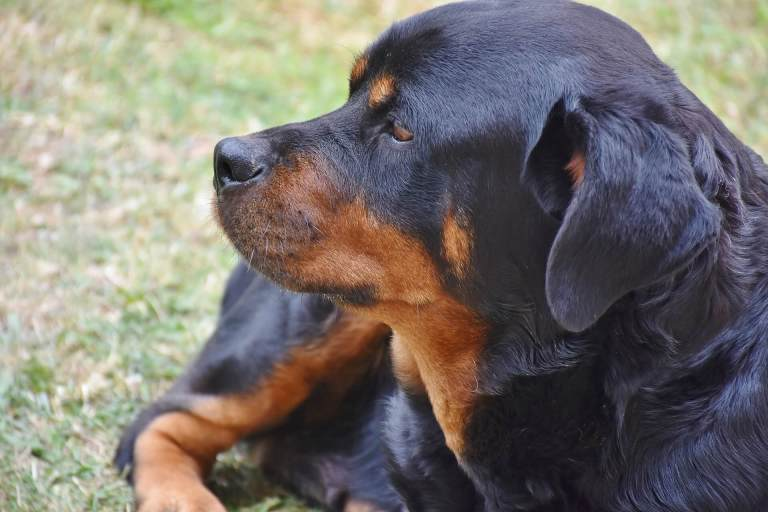

My pet is one of the the most uncommon dog breeds in the world.It is a rottweiler.but not just any rottweilers a german rottweiler. i got through a missionary who once came to my village to build a mission school and he was breeding them until when he decided to move back to his country and he lend me on of his pups . I had to get a vet who would ship me its"seed" dor it to actually reproduce.
 the rottwailer is avery playfull animal.It's very active as it always has to flex its muscles youll find out that once its not given enough room to exersice it will become inactive and will look as if its sick.Its sure to give you a brighter day always